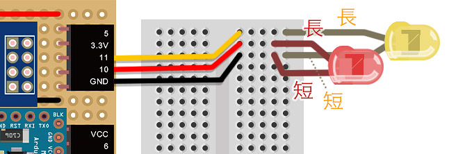
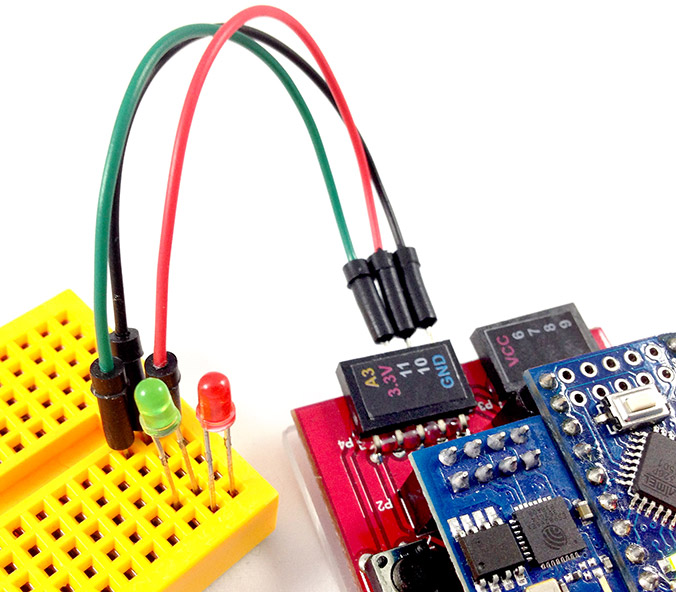
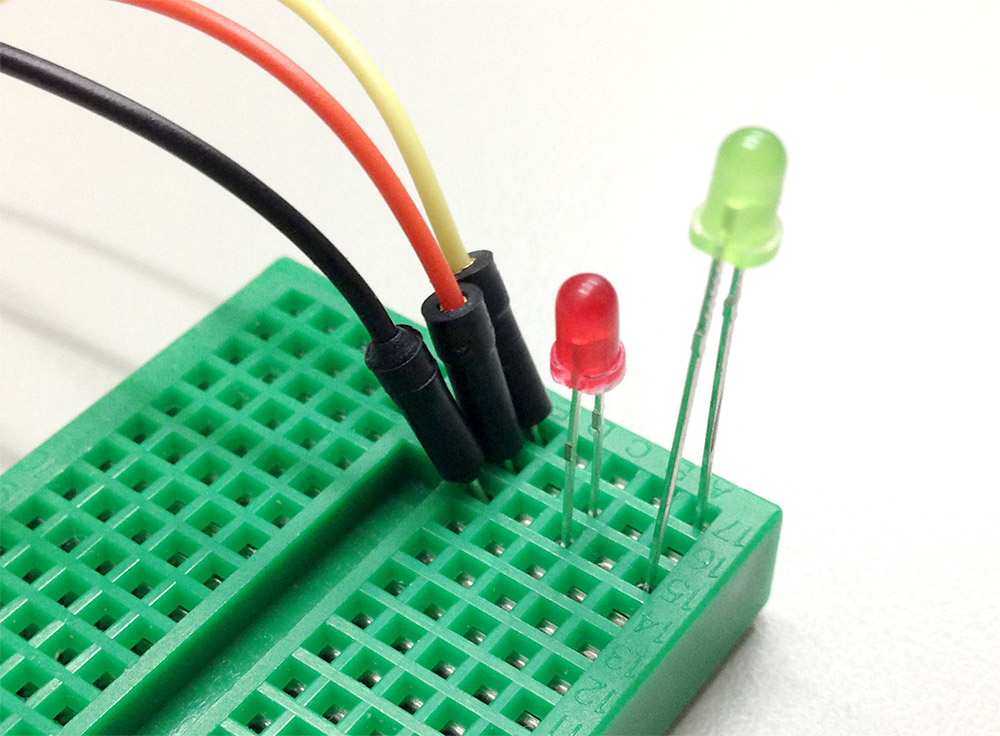

熟悉了 第一個範例 之後，接下來就要做點延伸的應用，在這個範例裡頭，將會利用按鈕的方式，同時操控兩顆 LED 燈，做出兩顆 LED 燈交互閃動的效果。
因為我們這次有使用到兩顆 LED 燈，所以必須要使用麵包板來進行，將黃色 LED 燈長腳接在 11，紅色 LED 燈長腳接在 10，兩顆 LED 燈共用一個 GND ( 地線 )。



跟第一個範例一樣，一開始先引入相關的 js 以及 WebComponents。
<script src="//webduino.io/components/webcomponentsjs/webcomponents.js"></script>
<link rel='import' href='//webduino.io/components/webduino/web-arduino.html' />
<link rel='import' href='//webduino.io/components/webduino/wa-led.html' />
接著我們只要用第一個範例來修改，多一顆 LED 燈接在 11 的腳位即可。
<div id='light' class="off">
<img src='http://i.imgur.com/T5H4MHE.png'></img>
<img src='http://i.imgur.com/8qFj2Ou.png'></img>
</div>
<web-arduino id="board" device='你的 device 名稱'>
<wa-led id='led1' pin='10'></wa-led>
<wa-led id='led2' pin='11'></wa-led>
</web-arduino>
CSS 跟範例 1 比起來幾乎是沒已有變化，主要也只是負責圖片的切換而已。
#light{
width:80%;
}
img{
width:100%;
display:none;
}
.off img:first-child{
display:inline-block;
}
.on img:last-child{
display:inline-block;
}
關鍵仍舊是 javascript 的部分，這裏我們將範例 1 的程式進行改良，加入了兩個時間的元素，分別是 setInterval 以及 setTimeout，當我們點選燈泡圖片的時候，就利用這時間的切換讓 LED 燈交互閃爍，當再度點選圖片時，就讓計時器歸零 ( 清空計時器 clearTimeout )，同時將 LED 利用 led.off() 的 api 關起來。
window.addEventListener('WebComponentsReady', function () {
var board = document.getElementById('board'),
light = document.getElementById('light');
board.on('ready',function ready() {
var led1 = document.getElementById('led1'),
led2 = document.getElementById('led2'),
timer1,timer2;
light.addEventListener('click', function() {
if(light.className == 'on'){
clearTimeout(timer1);
clearTimeout(timer2);
led1.off(); // 紅燈關起來
led2.off(); // 黃燈關起來
light.className = 'off';
}else{
timer1 = setInterval(function(){
led1.on(); // 紅燈打開
led2.off(); // 黃燈關起來
timer2 = setTimeout(function(){
led1.off(); // 紅燈關起來
led2.on(); // 黃燈打開
},300); // 延遲 0.3 秒發生
},600); //每 0.6 秒一次
light.className = 'on';
}
}, false);
});
}, false);
如果還有不清楚的，不妨利用這個 快速體驗範例，填入自己 Webduino 開發板的 device 名稱，按下設定，訊息處出現 ready 的話，就可以點選圖片讓不同的 LED 亮起，亦或是也可以參考這個 jsbin 範例，實際在上面填入 device 名稱並且修改體驗相關效果。